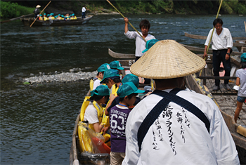

2013福島の子ども保養プロジェクトin埼玉を秩父市で開催しました
7月31日から8月2日の三日間、埼玉県生協連と埼玉県ユニセフ協会の共催で「2013福島の子ども保養プロジェクトin埼玉」を秩父市山田の埼玉県青少年総合野外活動センターで開催しました。
「福島の子ども保養プロジェクト」は、放射線による子ども達の被ばく積算量を心配する保護者の気持ちに応えようと、福島県生協連、福島大学災害復興研究所、福島連携復興センター共催でおこなわれているもので、日本生協連や日本ユニセフ協会も加わってこのプロジェクトを立ち上げ、昨年から全国で福島の子どもたちの保養企画がおこなわれています。
埼玉県での企画は、昨年度、福島県生協連と日本生協連の呼びかけに応え、8月24日から三日間、埼玉県県民活動センター（伊奈町）ほかでおこないましたが、今年も昨年に引き続き開催したもので、福島に住む子どもたちと父兄47人（内児童40人）が来県し、秩父市の埼玉県青少年総合野外活動センター他で夏休みの三日間を過ごしました。
長瀞中学校生徒の皆さんが秩父屋台囃子で歓迎しました
7月31日、参加した子どもたちの一行は、JR福島駅、郡山駅からそれぞれバスで出発し、昼過ぎ、秩父鉄道長瀞駅前に元気に到着しました。
長瀞駅前では、到着を待ち受けた学生ボランティアほかに迎えられ、駅前広場での歓迎行事に臨みました。
埼玉県生協連の滝澤玲子常務理事が「今回は、どんなことが出来るか、埼玉の生協みんなで考えてプログラムをつくりました。埼玉のなかでも自然豊かなこの秩父で、合宿のような三日間、僕は、わたしは、ここを頑張ったよと、何か一つ持ち帰ってください。たくさん体を動かして、食べて、友達にになって帰ってください」と歓迎の挨拶を述べました。
長瀞町教育委員会の宮原利定教育長は、「これから長瀞中学校生徒の歓迎のお囃子をおこないます。ここには、大きな川があり、ライン下りはスリルがあって楽しいと思います。三日間、たくさんの人たちと知り合って、夏休みの思い出を持ち帰ってください」と挨拶しました。
地元の長瀞町社会福祉協議会の金澤裕治事務局長からも「これから三日間、楽しい時間を、思い出に残る時間を過ごしてください」と挨拶いただきました。歓迎行事は、長瀞中学校の皆さんによる秩父音頭、秩父屋台囃子が披露されました。
| 挨拶する 滝澤県生協連常務理事 |
長瀞町教育長宮原様より ご挨拶 |
長瀞町社会福祉協議会 金澤様よりご挨拶 |
プログラムは引き続き、「ライン下り」に出発しました。荒川の渇水で心配されましたが、和船で岩畳までの船下りは、福島からの旅の疲れを癒していただくひとときとなりました。

秩父産「六割そば」づくりにみんなで挑戦しました
8月1日、二日目は、全員で元気にラジオ体操をおこない、朝食後、午前は、「そば打ち体験」に挑戦しました。
野外活動センターセントラルロッジの食堂ホールで、子どもたちは班ごとに、横瀬そばの会の皆さんの指導で、地元秩父産そば粉を使った六割そばづくりに挑戦しました。
子どもたちは、一緒に協力し合いながら、一生懸命にそばを捏ね、真剣にそばを切り分けておいしいそばを作り上げました。お昼は、作り立てのそばとおにぎりで昼食。おいしさに満足しながら、楽しい会話が弾みました。
| 真剣な表情でそば打ち | アロマの虫取りづくりを終えて |
楽しく過ごしたキャンプファイヤー
午後は、夜のキャンプファイヤーに備えて、参加者全員でアロマの虫取りづくりをおこない、その後、親と子に分かれ、子どもたちはロッジの広場で工作と野外遊び、親の皆さんはお茶会をしました。
野外活動は、ボーイスカウト埼玉県連盟の皆さんによる指導で、屋外での伸び伸びした時間を過ごしました。
夜は、雨天ファイアー場でキャンプファイヤー。火の神様から授けられた火が点火され、勢いよく燃え上がる焚火をみんなで囲み、歌いながら楽しく過ごしました。
| 野外活動（１） | 野外活動（２） | 楽しかったキャンプファイヤー |
ニジマスつかみ取りもしました
最終日の8月2日は、二泊した野外活動センターを別れ、長瀞町に移動してニジマスつかみ取りとバーベキューで昼食。おいしい水の湧き出す会場で、ニジマスのつかみ取りをした後、森の中のバーベキュー場でおいしいバーベキューを楽しみながら、秩父での楽しかった三日間を終えました。
■2013福島の子ども保養プロジェクトin埼玉の概要
- 日 時：
- 2013年7月31日（水）～8月2日（金）
- 参加者：
- 47人（内児童40人）
- 会 場：
- 埼玉県青少年総合野外活動センター
- 秩父市山田4386
- 主 催：
- 埼玉県生協連 福島の子ども保養プロジェクトin埼玉実行委員会、埼玉県ユニセフ協会
- 協 力：
- JA埼玉県中央会、ボーイスカウト埼玉県連盟、埼玉YMCA、株式会社伊藤園、東京サラヤ株式会社、花王株式会社、長瀞町立長瀞中学校、長瀞町社会福祉協議会 他
- ボランティア：
- コープみらい、医療生協さいたま、埼玉県生協連、ボーイスカウト埼玉県連盟、横瀬そばの会、長瀞町社会福祉協議会、手当ての輪、他、個人
- 学生ボランティア21人（麻布大学、跡見学園大学、浦和大学、十文字学園戸板女子短大、大東文化大学、日本女子大ほか）
- 事務局：
- コープみらい、パルシステム埼玉、生活クラブ生協、医療生協さいたま、全労済埼玉県本部、埼玉県ユニセフ協会、埼玉県生協連